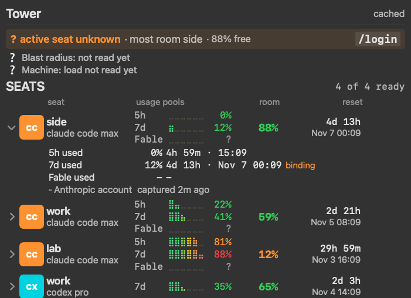

Which account has room?
A macOS menu bar app for people who run several AI coding subscriptions. It shows where every account stands (usage per window, room left, when it resets) and tells you which one to switch to before you get stuck.
Demo accounts are invented.

What it does
- Seats. Real Claude Code usage for each account you have signed into: the 5 hour and weekly windows, the room left, the next reset. Codex and Cursor plans sit beside them.
- Advice. Which seat has the most room, and when to switch.
- MCP server.
tower mcplets Claude Code, Codex, Cursor and other agents ask which account has room.
Every coding agent
Claude Code, Codex, Cursor, Cursor CLI, Devin, Muse, Antigravity and Pi, with the OpenRouter balance and the TypeSafe Jev and Cloudflare Clef balances you enter by hand. Other agents and OpenRouter appear when those tools are installed.
Windows support and more harnesses coming next.
Ask your agent
tower mcp is a stdio MCP server that runs locally on your Mac. It opens no network port and sends nothing to us or anyone else. Reads never show a Keychain dialog. Plain prompts land on a tool:
- “Which of my accounts has room for a long refactor?”
tower_room - “Should I stay on this account or switch?”
tower_advice - “When does my weekly window reset?”
tower_resets - “Is any reading stale? How fresh is each one?”
tower_freshness - “Give me a rotation plan for the next login.”
tower_rotate - “Show me the Tower panel.”
tower_panelshot(an image)
claude mcp add --scope user tower -- ~/.local/bin/tower mcp
Install
macOS 14 or later, Apple silicon. Intel Macs build from source.
gh release download --repo yonatangross/tower --pattern 'Tower.app.zip*' shasum -a 256 -c Tower.app.zip.sha256 && ditto -x -k Tower.app.zip ~/Applications open ~/Applications/Tower.app
First launch. Tower is not notarized by Apple, so macOS may block it once with "Apple could not verify Tower is free of malware". Press Done, open System Settings, Privacy & Security, scroll to Security and press Open Anyway next to Tower, then Open Anyway again (enter your login password if asked). macOS does not ask again for this copy.
Then run /login once per Claude Code account. More help: the troubleshooting playbook.